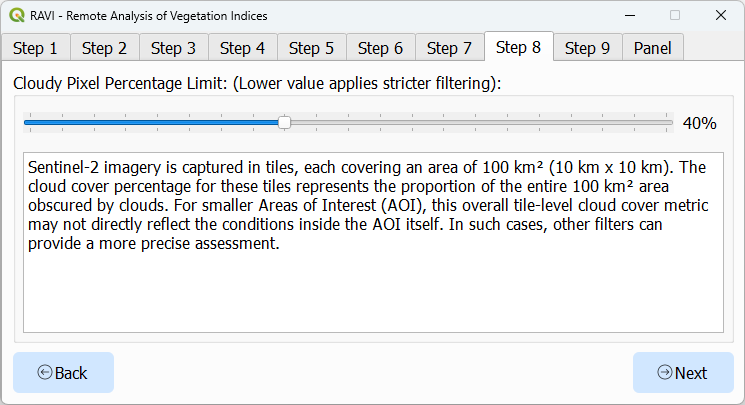
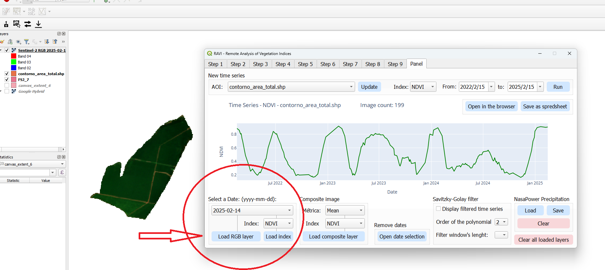
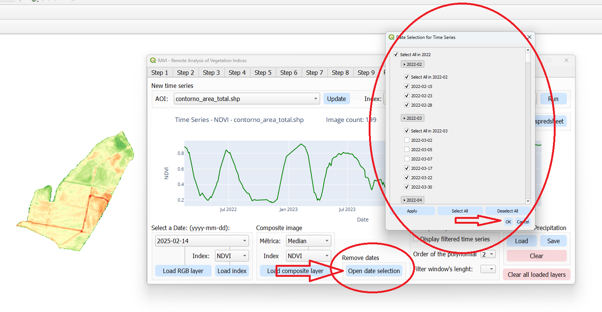
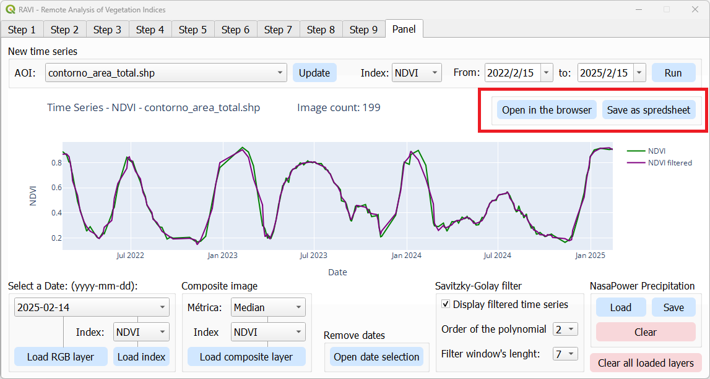
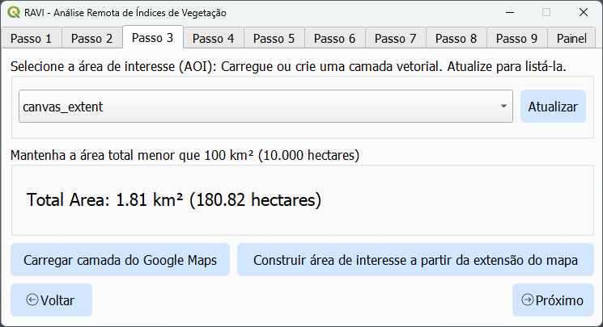
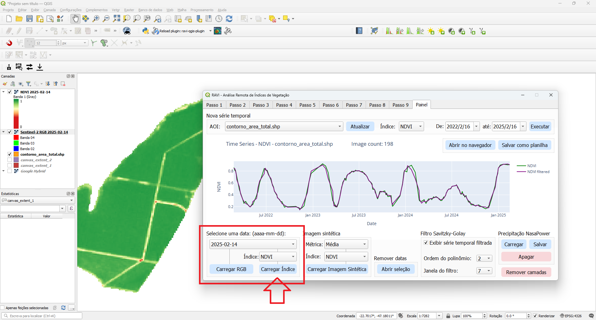
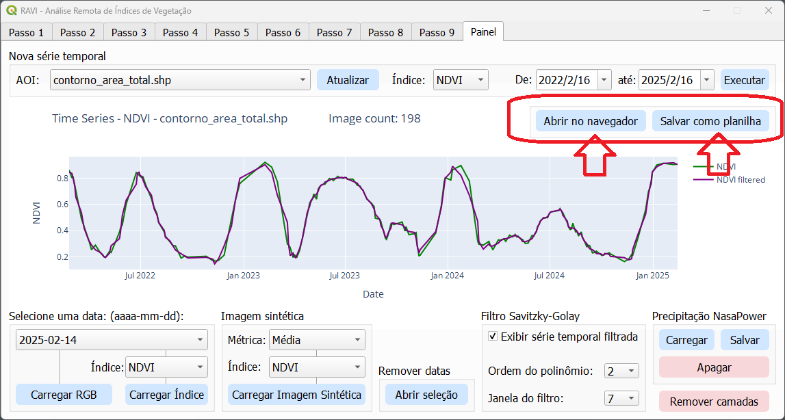
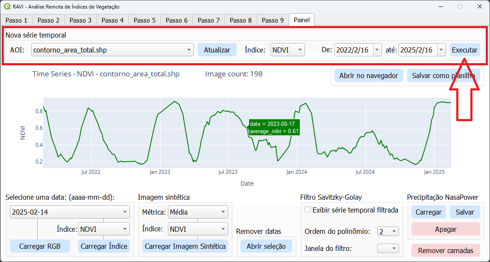
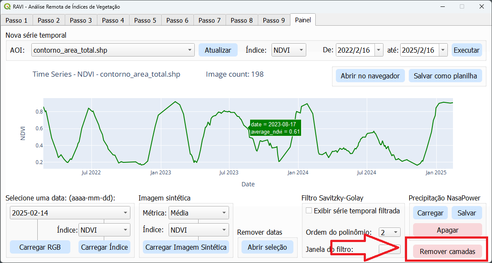

RAVI - Remote Analysis of Vegetation Indices
RAVI is a QGIS plugin designed to seamlessly integrate with Google Earth Engine (GEE), enabling efficient processing and visualization of geospatial data. Utilizing the Sentinel-2 harmonized surface reflectance catalog, the plugin supports vegetation index calculations and easy download of multispectral imagery. These features make it a viable tool for students, researchers, farmers, and GIS professionals working in agriculture, land monitoring, or environmental management.
Key Features
1. Earth Engine Integration
- Easy Authentication: Authenticate with Google Earth Engine to enable plugin functionality.
- Direct Processing: Access, process, and analyze Sentinel-2 imagery without leaving QGIS.
- On-the-Fly Visualization: Visualize processed data as raster layers or interactive plots.
2. Vegetation Index Calculations
- Supported Indices: Compute indices such as NDVI, EVI, SAVI and GNDVI.
- Customizable Metrics: Aggregate data using mean, max, min, median, amplitude, or standard deviation.
3. Advanced Time Series Analysis
- Generate time series for vegetation indices over a defined Area of Interest (AOI).
- Integrate precipitation data from NASA POWER for cross-variable comparisons.
- Smooth data with Savitzky-Golay filters for enhanced trend analysis.
4. AOI Selection
- AOI Management: Load areas of interest from shapefiles or GeoJSON files.
5. Interactive Visualization
- Charts: Create interactive time series plots using Plotly.
- Raster Styling: Apply predefined color ramps (e.g., RdYlGn) for visual clarity.
- Export Options: Export processed data as GeoTIFFs, CSVs, or styled rasters.
6. Comprehensive Imagery Management
- Date Filtering: Filter individual images by acquisition date.
- Cloud Filtering: Exclude or mask cloudy pixels while preserving usable data.
- Composite Creation: Generate composite images based on user-defined metrics.
Installation
To install RAVI:
- Open QGIS and navigate to the Plugins menu.
- Select Manage and Install Plugins.
-
In the plugin repository settings, enable Show also experimental plugins.

- In the "All" tab, search for "RAVI", select it, and click Install.
- Ensure that RAVI is checked in the installed plugins list.
- Restart QGIS.
Usage
Step 1: Authentication

- Open the plugin dialog.
- Authenticate with Google Earth Engine using your credentials.
Step 2: Select output folder

Choose the folder where you want to save the output files.
Step 3: Load and select the area of interest (AOI)

- Select an AOI by loading a shapefile or GeoJSON file.
- Ensure the geometry is valid (Polygon or MultiPolygon only).
- Add a Google Maps layer to the QGIS canvas for better visualization and context.
- Use the Build AOI from Canvas Extent button to automatically generate a new AOI based on the current canvas extent.
Step 4: Define time range for imagery search

Set a custom time range or select a suggested one.
Step 5: Select vegetation index for time series analysis

Choose the vegetation index you want to analyze from the dropdown menu.
Step 6: Imagery Overlap filter

Set the specified filter according to your analysis requirements.
Step 7: AOI Buffer

Use AOI Buffer filter to reduce the AOI boundary for analysis.
Step 8: Cloud pixel percentage filter

Set the specified filter according to your analysis requirements.
Step 9: Valid pixel percentage filter

Set the specified filter according to your analysis requirements.
Results Page
1. Time Series Plot

- Visualize the time series of the selected vegetation index over the defined AOI.
- Hover over the plot to see specific values and dates for detailed analysis.
2. Load RGB Layer (Focus on a Day)

Load and display an RGB layer for a specific date to analyze the visual appearance of the area. All spectral bands are downloaded, and the band numbers correspond to the Sentinel-2 bands as listed in the table below:
| Sentinel-2 Band Name |
QGIS Band Number |
Wavelength (nm) |
Spatial Resolution (m) |
| Band 1 (Coastal aerosol) |
1 |
443 |
60 |
| Band 2 (Blue) |
2 |
490 |
10 |
| Band 3 (Green) |
3 |
560 |
10 |
| Band 4 (Red) |
4 |
665 |
10 |
| Band 5 (Vegetation Red Edge) |
5 |
705 |
20 |
| Band 6 (Vegetation Red Edge) |
6 |
740 |
20 |
| Band 7 (Vegetation Red Edge) |
7 |
783 |
20 |
| Band 8 (NIR) |
8 |
842 |
10 |
| Band 8A (Vegetation Red Edge) |
9 |
865 |
20 |
| Band 9 (Water Vapour) |
10 |
945 |
60 |
| Band 10 (SWIR - Cirrus) |
11 |
1375 |
60 |
| Band 11 (SWIR) |
12 |
1610 |
20 |
| Band 12 (SWIR) |
13 |
2190 |
20 |
3. Load Index Layer (Focus on a Day)

Load and display a vegetation index layer for a specific date.
4. Load Index Layer (Composite Image)

Generate and display a composite image based on the selected vegetation index and the user-defined metric.
The composite image will include all images within the current date selection. Use the date selection tool to filter out specific dates.
5. Date Selection Tool

- Use the date selection tool to filter and select specific dates for analysis.
- The date selection tool updates the time series plot.
- Composite images are based on all selected dates.
6. Savitzky-Golay Filter

Apply the Savitzky-Golay filter to smooth the time series data for enhanced trend analysis.
The parameters for the Savitzky-Golay algorithm, such as the order of the polynomial and the window length, can be adjusted as needed to fine-tune the smoothing process.
7. Save Options


Save the time series data in spreadsheet format (CSV).
To save the time series as an image, open it in the browser to enable the download option.
8. NASA POWER Precipitation

Add monthly precipitation data from NASA POWER for cross-variable comparisons.
Save the precipitation data in spreadsheet format (CSV).
9. Quickly Run New Time Series

Quickly run a new time series analysis by changing the Area of Interest (AOI), Vegetation Index, or time range.
10. Clear All Loaded Layers

Clear all loaded layers from the layer panel to start a new analysis or to declutter the workspace.
Troubleshooting
- Earth Engine Authentication Failed: Ensure you have the necessary requirements as explained in the authentication tab.
- AOI Errors: Verify the AOI file is valid and has a valid CRS (EPSG:4326 preferred).
Reporting Issues
If you encounter any issues or have suggestions for improvements, please open an issue in the GitHub Issues section.
Contribute to the Project
Contributions are welcome! Please visit the GitHub repository to get started.
License
RAVI is licensed under the GNU General Public License v2.0 or later. Refer to the LICENSE file for details.
RAVI - Análise Remota de Índices de Vegetação
RAVI é um plugin para QGIS projetado para se integrar ao Google Earth Engine (GEE), permitindo o processamento e a visualização eficientes de dados geoespaciais. Utilizando o catálogo de reflectância de superfície harmonizada do Sentinel-2, o plugin suporta cálculos de índices de vegetação e o download fácil de imagens multiespectrais. Esses recursos tornam a ferramenta viável para estudantes, pesquisadores, agricultores e profissionais de GIS que atuam na agricultura, monitoramento de terras ou gestão ambiental.
Principais Funcionalidades
1. Integração com o Earth Engine
- Autenticação Fácil: Autentique-se no Google Earth Engine para habilitar a funcionalidade do plugin.
- Processamento Direto: Acesse, processe e analise imagens do Sentinel-2 sem sair do QGIS.
- Visualização Imediata: Visualize os dados processados como camadas raster ou gráficos interativos.
2. Cálculos de Índices de Vegetação
- Índices Suportados: Calcule índices como NDVI, EVI, SAVI e GNDVI.
- Métricas Personalizáveis: Agregue os dados utilizando média, máximo, mínimo, mediana, amplitude ou desvio padrão.
3. Análise Avançada de Séries Temporais
- Gere séries temporais para os índices de vegetação sobre uma Área de Interesse (AOI) definida.
- Integre dados de precipitação da NASA POWER para comparações entre variáveis.
- Suavize os dados com filtros de Savitzky-Golay para uma análise de tendências aprimorada.
4. Seleção de área de interesse (AOI)
- Gerenciamento de AOI: Carregue áreas de interesse a partir de arquivos shapefile ou GeoJSON.
5. Visualização Interativa
- Gráficos: Crie gráficos interativos de séries temporais usando o Plotly.
- Estilização de Raster: Aplique rampas de cores predefinidas (por exemplo, RdYlGn) para melhor clareza visual.
- Opções de Exportação: Exporte os dados processados como GeoTIFFs, CSVs ou rasters estilizados.
6. Gerenciamento Abrangente de Imagens
- Filtragem por Data: Filtre imagens individuais por data de aquisição.
- Filtragem por Nuvens: Exclua ou masque pixels nublados, preservando os dados utilizáveis.
- Criação de Imagens Sintéticas: Gere imagens sintéticas com base em métricas definidas pelo usuário.
Instalação
Para instalar o RAVI:
- Abra o QGIS e navegue até o menu Plugins.
- Selecione Gerenciar e Instalar Plugins.
-
Nas configurações do repositório de plugins, habilite Mostrar também plugins experimentais.

- Na aba "Todos", pesquise por "RAVI", selecione-o e clique em Instalar.
- Certifique-se de que o RAVI está marcado na lista de plugins instalados.
- Reinicie o QGIS.
Uso
Passo 1: Autenticação

- Abra a janela do plugin.
- Autentique-se no Google Earth Engine utilizando suas credenciais.
Passo 2: Selecionar a pasta de saída

Escolha a pasta onde deseja salvar os arquivos de saída.
Passo 3: Carregar e selecionar a área de interesse (AOI)

- Selecione uma AOI carregando um arquivo shapefile ou GeoJSON.
- Certifique-se de que a geometria é válida (apenas Polygon ou MultiPolygon).
- Adicione uma camada do Google Maps ao canvas do QGIS para melhor visualização e contexto.
- Use o botão Build AOI from Canvas Extent para gerar automaticamente uma nova AOI com base na extensão atual do canvas.
Passo 4: Definir o intervalo de tempo para busca de imagens

Defina um intervalo de tempo personalizado ou selecione um sugerido.
Passo 5: Selecionar o índice de vegetação para análise de séries temporais

Escolha o índice de vegetação que deseja analisar a partir do menu dropdown.
Passo 6: Filtro de sobreposição de imagens

Utilize o filtro de Buffer de AOI para reduzir o limite da AOI para análise.
Passo 7: Buffer de AOI

Defina o filtro especificado de acordo com os requisitos da sua análise.
Passo 8: Filtro de porcentagem de pixels nublados

Defina o filtro especificado de acordo com os requisitos da sua análise.
Passo 9: Filtro de porcentagem de pixels válidos

Defina o filtro especificado de acordo com os requisitos da sua análise.
Página de Resultados
1. Gráfico de Séries Temporais

- Visualize a série temporal do índice de vegetação selecionado sobre a AOI definida.
- Coloque o cursor sobre o gráfico para ver valores e datas específicos para uma análise detalhada.
2. Carregar Camada RGB (Foco em um Dia)

Carregue e exiba uma camada RGB para uma data específica para analisar a aparência visual da área. Todas as bandas espectrais são baixadas, e os números das bandas correspondem às bandas do Sentinel-2 conforme listado na tabela abaixo:
| Nome da Banda Sentinel-2 |
Número da Banda no QGIS |
Comprimento de Onda (nm) |
Resolução Espacial (m) |
| Banda 1 (Aerossol Costeiro) |
1 |
443 |
60 |
| Banda 2 (Azul) |
2 |
490 |
10 |
| Banda 3 (Verde) |
3 |
560 |
10 |
| Banda 4 (Vermelho) |
4 |
665 |
10 |
| Banda 5 (Borda Vermelha da Vegetação) |
5 |
705 |
20 |
| Banda 6 (Borda Vermelha da Vegetação) |
6 |
740 |
20 |
| Banda 7 (Borda Vermelha da Vegetação) |
7 |
783 |
20 |
| Banda 8 (NIR) |
8 |
842 |
10 |
| Banda 8A (Borda Vermelha da Vegetação) |
9 |
865 |
20 |
| Banda 9 (Vapor d'água) |
10 |
945 |
60 |
| Banda 10 (SWIR - Cirrus) |
11 |
1375 |
60 |
| Banda 11 (SWIR) |
12 |
1610 |
20 |
| Banda 12 (SWIR) |
13 |
2190 |
20 |
3. Carregar Camada de Índice (Foco em um Dia)

Carregue e exiba uma camada de índice de vegetação para uma data específica.
4. Carregar Camada de Índice (Imagem Sintética)
Gere e exiba uma imagem sintética com base no índice de vegetação selecionado e na métrica definida pelo usuário.
A imagem sintética incluirá todas as imagens dentro da seleção de datas atual. Utilize a ferramenta de seleção de datas para filtrar periodos específicos.
5. Ferramenta de Seleção de Datas
- Utilize a ferramenta de seleção de datas para filtrar e selecionar datas específicas para análise.
- A ferramenta de seleção de datas atualiza o gráfico de séries temporais.
- Imagens sintéticas são geradas com base em todas as datas selecionadas.
6. Filtro Savitzky-Golay
Aplique o filtro Savitzky-Golay para suavizar os dados da série temporal e melhorar a análise de tendências.
Os parâmetros do algoritmo, como a ordem do polinômio e o tamanho da janela, podem ser ajustados conforme necessário para refinar o processo de suavização.
7. Opções de Salvamento


Salve os dados da série temporal em formato de planilha (CSV).
Para salvar a série temporal como imagem, abra-a no navegador para habilitar a opção de download.
8. Precipitação NASA POWER
Adicione dados mensais de precipitação da NASA POWER para comparações entre variáveis.
Salve os dados de precipitação em formato de planilha (CSV).
9. Executar Nova Série Temporal Rapidamente

Execute rapidamente uma nova análise de série temporal alterando a Área de Interesse (AOI), o Índice de Vegetação ou o intervalo de tempo.
10. Limpar Todas as Camadas Carregadas

Limpe todas as camadas carregadas no painel de camadas para iniciar uma nova análise ou para organizar o espaço de trabalho.
Solução de Problemas
- Falha na Autenticação do Earth Engine: Certifique-se de que você atende aos requisitos necessários conforme explicado na aba de autenticação.
- Erros na AOI: Verifique se o arquivo da AOI é válido e possui um CRS válido (preferencialmente EPSG:4326).
Reportando Problemas
Se você encontrar algum problema ou tiver sugestões de melhorias, por favor, abra uma issue na seção de GitHub Issues.
Contribua para o Projeto
Contribuições são bem-vindas! Por favor, visite o repositório no GitHub para começar.
Licença
O RAVI é licenciado sob a GNU General Public License v2.0 ou posterior. Consulte o arquivo LICENSE para mais detalhes.